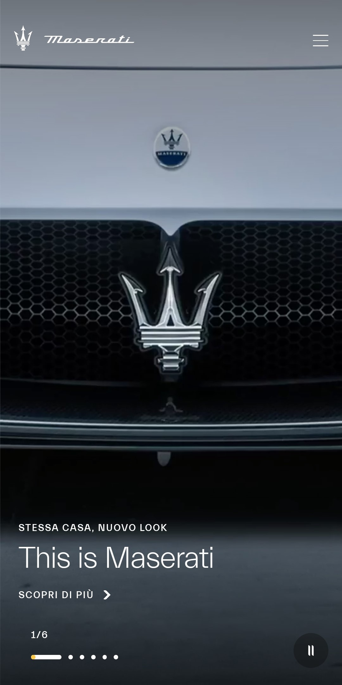

PARC: Alignment
Loro Piana
loropiana.comOn Loro Piana website alignment is used really well, it can be noticed right on the homepage scrolling we can see that the elements are positioned following a precise pattern which gives to the website an elegant touch.
PARC: Contrast
T+A
ta-hifi.deOn T+A website if we scroll a little bit we can notice how not only they used the right contrast but they went further by playing with it to create an attractive while also easy to read website.
Visual Hierarchy
Maserati
maserati.com On Maserati website gives us a perfect example of a good visual hierachy, in fact scrolling the main page we can focus our attention to single elements because only needed information is viewable.